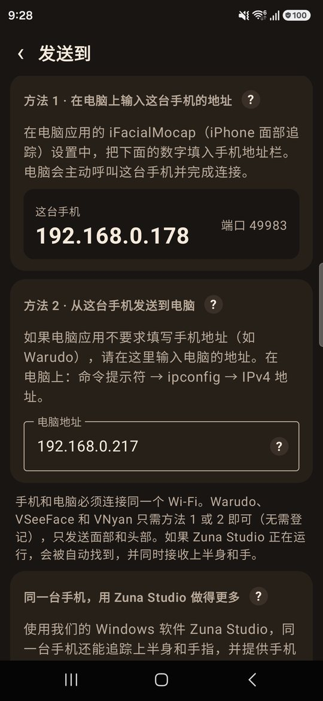
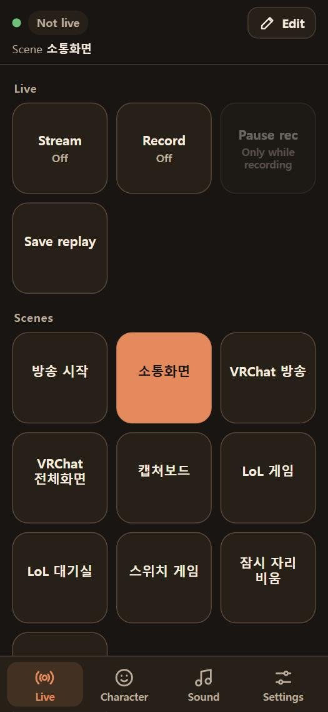

支持的软件
- Warudo
- VSeeFace
- VNyan
以及所有支持 iFacialMocap 的软件。 也支持 VMC 软件（进阶）。
三步开始
手机和电脑连同一个 Wi-Fi。
立好手机
离脸 30–50 cm，与视线齐平，光从正面来。

在电脑上选择 iFacialMocap
在电脑软件中选择 iFacialMocap，输入应用中显示的手机地址。

开始并校准
点开始追踪，校准一次（45 秒）。

为直播而做
视频只在手机上
只把追踪数值发到你的电脑。不录制，不上传。
无账号，无广告
无需注册，没有广告和分析工具。
按你的脸校准
校准一次即可。移动手机后，4 秒快速校准。
前置、后置、后置广角
可用更清晰的后置摄像头，语音会提示步骤。
息屏也能追踪
后台持续运行，并过滤异常跳动。
支持四种语言
首次引导和 ? 说明，支持 English、한국어、日本語、简体中文。
设备要求
| 最低 | 推荐 | |
|---|---|---|
| Android | Android 10 及以上 | Android 13 及以上 |
| 处理器 | 64 位（ARM64） | 2021 年后的中端及以上芯片 |
| 内存 | 4 GB | 6 GB 及以上 |
| 网络 | 手机和电脑连接同一个 Wi-Fi | 5 GHz Wi-Fi，电脑用有线或 5 GHz |
在 Galaxy S24 Ultra（Android 16）上约 40 fps。旧手机会更慢。
用 Zuna Studio 做得更多
这是我们的 Windows 软件。同一台手机还能追踪手臂和手指，并用手机控制台掌控直播。Warudo、VSeeFace、VNyan 不需要它。
| 功能 | Warudo / VSeeFace / VNyan | Zuna Studio |
|---|---|---|
| 面部和头部 | 支持 | 支持 |
| 肩膀和手臂 | 需要另一个追踪设备 | 支持 |
| 手指 | 需要另一个追踪设备 | 支持 |
| 从电脑发起校准 | 不支持 | 支持 |
| 手机或平板上的直播控制台 | 不支持 | 支持 |
| 只有你的手机能驱动形象 | 不支持 | 支持 |
查看 Studio 带来的全部功能
追踪
- 同一摄像头追踪上半身、手臂和手指
- 按形象体型适配的手臂
- 快捷键或控制台按钮快速校准
虚拟形象
- 口型 a·i·u·e·o 与麦克风唇形同步
- 表情快捷键和自动表情
- 摆动的头发、道具和可投掷的物品
直播
- 透明背景直接输出到 OBS（Spout2）
- 控制台：OBS 场景、录制、回放、静音
- 按情境的背景音乐和一键宏
安心
- 注册本机，阻止其他设备
- 新的控制台设备需在电脑上用 4 位数字允许
- 视频不会离开手机


免费咨询
为你的形象专门打造
Studio 不公开发布。我们会按你的形象配置表情、手臂、手指、镜头和控制台。咨询免费。
咨询 Zuna Studiomaxjang123@gmail.com
需要你提供的内容
- 虚拟形象文件VRChat 工程或 .unitypackage、Humanoid FBX，或 VRM
- 形态键ARKit／Perfect Sync、VRChat 口型、VRM、MMD，或没有
- 着色器名称和版本（例如 lilToon 2.x）
- 授权使用条款或销售页面；需允许直播和修改
- 其他（可选）表情动画、服装、道具、物理骨骼
- 使用环境手机、Windows 10/11 64 位（DirectX 12）、OBS＋Spout2
- 直播配置（可选）OBS 场景、背景、音乐、镜头构图
请用下载链接发送文件，不要用附件。请勿发送密码。
常见问题
需要 iPhone 或 iFacialMocap 应用吗？
不需要。电脑软件会把 Zuna Facecap 识别为 iFacialMocap。
摄像头视频会被发送到别处吗？
不会。视频留在手机上，只把数值发到电脑。
需要联网吗？
不需要。在你的 Wi-Fi 内运行，联网只用于检查更新。
在 Warudo、VSeeFace、VNyan 中身体和手也会动吗？
只有面部和头部。手臂和手指请用 Zuna Studio。
可以用后置摄像头吗？
可以。设置 → 相机 → 后置 或 后置广角。请开启语音引导。
一定要用 Zuna Studio 吗？
Warudo、VSeeFace、VNyan 不需要。想要更多功能请联系我们。
电脑软件找不到手机
请检查：同一个 Wi-Fi（非访客网络）、Windows 防火墙已允许“专用网络”、VPN 已关闭、手机地址是最新的。
旧手机能用吗？
Android 10 及以上、64 位芯片即可。卡顿时关闭上半身、手和 60 fps 追踪。
APK 安全吗？怎么更新？
这是我们签名的测试版，以“Zuna Facecap Dev”安装，应用会提示 GitHub 上的更新。可像普通应用一样卸载。